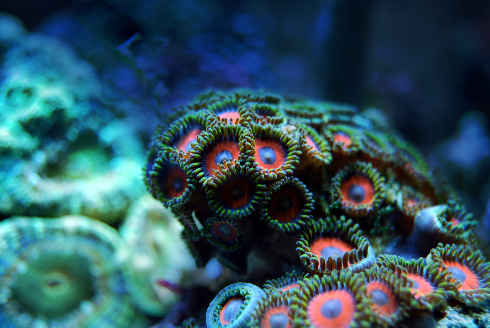
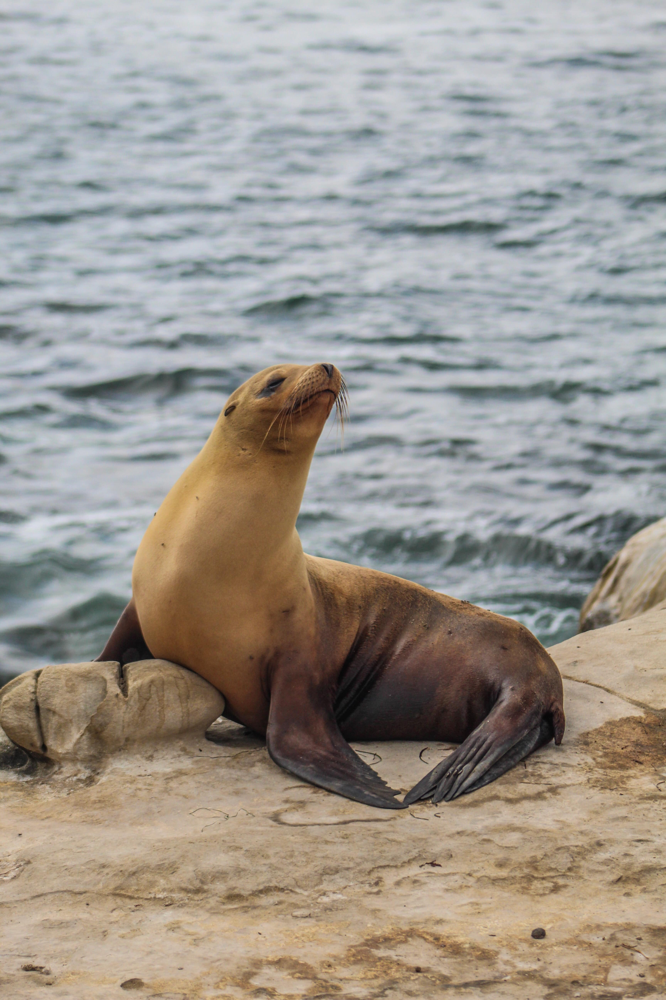

Let's Preserve Our Oceans
As Our Most Precious Asset We Must Protect It at All Costs
The Amazing World of Oceans

It's incredible how little we know about our oceans, they contain the largest area of biodiversity on the surface of the earth, with thousands and thousands of species of life, each of which has unique characteristics, from small fishes to large aquatic mammals that give us beautiful and exuberant representations of nature in its purest form. That is why it is so important to preserve and study our oceans correctly, so that future generations can get to know this fantastic world, and so that humanity can be able to live in harmony with all the species that are present there, as a way to gain more and more knowledge about them.
Oceans & Biomedicine
Previously it was said that our oceans are places full of the most varied forms of life, as a consequence of this, humanity ended up finding in it a huge source of microorganisms that have been able to help us over the years in the most varied ways, through biomedicine. For a long time now, humanity has been benefiting from the ocean to combat diseases, as well as to better understand various aspects of our body, a great example of this occurred when the great Covid-19 pandemic ended up hitting our world, during this period, some researchers found certain substances in various marine beings that could help us in this fight.
Such as the case of M101 (known as HEMARIN) found in the hemoglobin of marine worms, which ended up being used in the treatment of people affected by Covid-19, there are many of several others examples such as the case of jellyfish that taught us about the functioning of our own system of nerves and neurons in the past, which only makes us reinforce the fact that it is much more useful for us if we take good care of our oceans, harvesting a seed that can be harvested well in the future.
Unique Species

It seems that our little friend did well today, do you recognize this friendly little animal with the mustache? It is called the marine bond, proof of how the oceans are so varied and teeming with life, containing an almost infinite number of species like this one, each with their own unique way of being and eating.
Discover More Marine Species


Start your journey through the wonderful world of the oceans here. Take a look at these species selected especially so that you understand a little more about the wonderful world of the oceans, and the best way to do this is with the cutest residents of this aquatic land.
Taking Care Of our Oceans
To preserve our environment we must take very good care of our oceans, not throwing rubbish already helps our planet a lot, as rubbish discarded in the ocean can harm marine life, causing an accident when digested, making it difficult for animals to move around or even leading to his death, we must ensure that no one throws garbage and pollutes our oceans, together we can be strong and fight against all this.
Enough of pollution in our seas, stop throwing sewage into our oceans, stop throwing plastic objects into our oceans, keep ships regulated so they don't spill oil into our oceans.
For a deeper dive into oceans world, visit SaveTheOceans.com